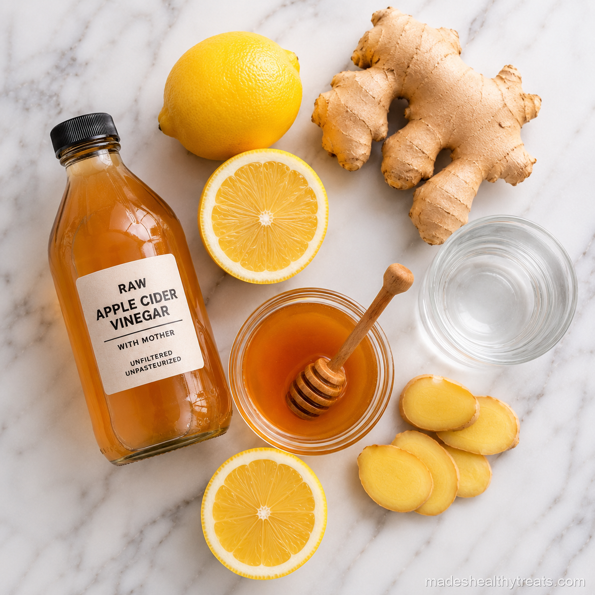

Why I Take This One
I take this one when I want something simple before breakfast that wakes up my digestion without being too sweet. Apple cider vinegar brings the tang, lemon makes it brighter, ginger warms it up, and honey keeps it from feeling harsh.
This is the shot I make when I have eaten heavier food the day before and want to feel balanced again. It is not about punishing myself, it is about starting fresh with a small glass of something that makes me pause and choose the next thing with care.

Here's What You'll Need
You will need one tablespoon of raw unfiltered apple cider vinegar with the mother, the juice of half a lemon, a half inch piece of fresh ginger, one teaspoon of raw honey, and a quarter cup of cold water.
How I Make It
I add the cold water, apple cider vinegar, lemon juice, ginger, and honey to the blender. Then I blend for about 45 to 60 seconds until the ginger is broken down and the honey is fully mixed in.
I strain it into a small glass and drink it right away, then I rinse my mouth with plain water afterward. That little rinse matters because vinegar is acidic and I like my enamel exactly where it is.
Made's Tips
Always dilute apple cider vinegar because drinking it straight is rough on your teeth and your throat.
I use raw unfiltered vinegar with the mother because the flavor feels rounder and more alive.
If the shot tastes too sharp, I add a little more water before adding more honey.